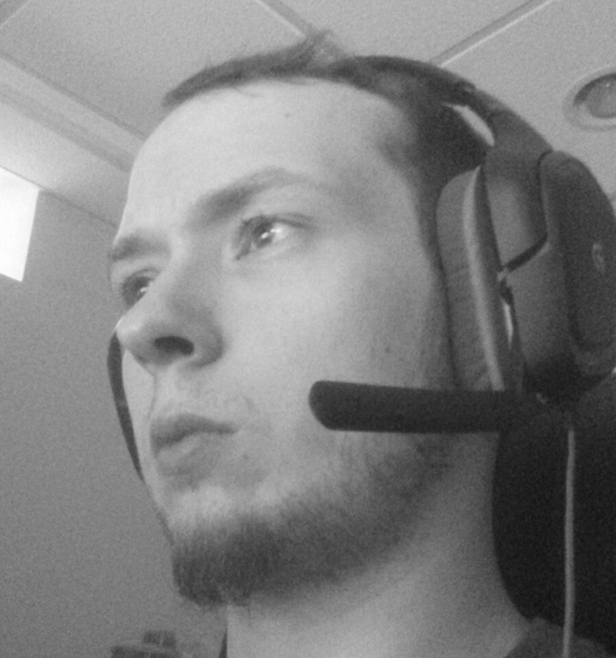

About Myself

My name is Carson Hoff. I am a 23 year old sloth wearing the skin of a man, obsessed with videogames and
the design behind them. When I'm not gaming or doing the daily grind as a package handler, I work on a game
of my own. Games have always had a particular magic in how they entrance the user. Their unique characteristic of allowing interaction
with the medium creates a dynamic wherein the user can look inward while they play. It is my dream to one day capture
even just a single person with games, in the same manner that they do me.
Anime is another big hobby of mine. I think the medium is often plagued with lowest common denominator appeal
and can be reductive in how it approaches certain topics. That said, once in awhile there's a piece of gold that
keeps digging through the mud worth it.
I firmly agree with the phrase that 'variety is the spice of life' and so I dabble in others hobbies because you just never
know what you could be missing out on. I draw on occasion and have been thinking about picking up an instrument again.